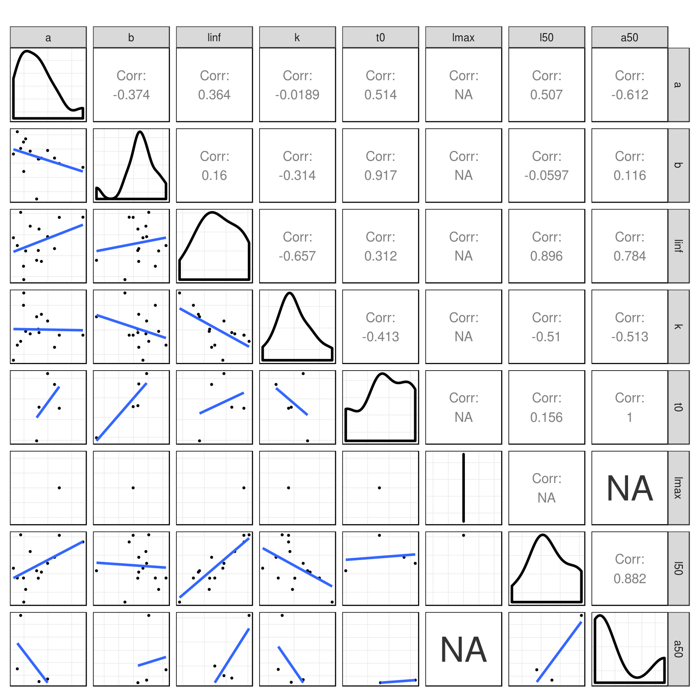
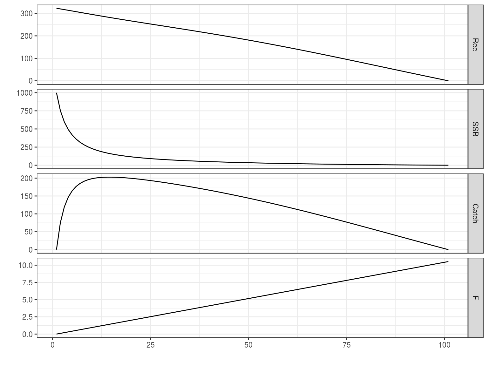

FLife
WKLIFE Life History Relationships
Laurence Kell
07 December, 2018
FLife-wklife.RmdLife history parameters
species name area stock sex
1 Clupea harengus Herring Celtic Seas her-nis F
2 Pollachius pollachius Pollack North Sea pol-nsea C
3 Molva molva Ling Widely lin-comb C
4 Sebastes norvegicus Rose fish Northern smn-con C
5 Mullus surmuletus Red mullet Celtic Seas mut-comb F
6 Scopthalmus maximus Turbot North Sea tur-nsea F
7 Microstomus kitt Lemon sole North Sea lem-nsea C
8 Lepidorhombus whiffiagonis Megrim North Sea meg-4a6a C
9 Ammodytes spp. Sandeels North Sea san-ns4 C
10 Pleuronectes platessa Plaice Celtic Seas ple-celt F
11 Merlangius merlangus Whiting Celtic Seas whg-7e-k F
12 Melanogrammus aeglefinus Haddock Celtic Seas had-iris C
13 Lophius piscatorius White anglerfish Celtic Seas ang-78ab C
14 Lophius piscatorius White anglerfish North Sea ang-ivvi C
15 Nephrops Shellfish Biscay-Iberia nep-2829 F
a b linf k t0 lmax l50 a50
1 0.00480 3.20 33.0 0.606 NA NA 23.0 NA
2 0.00760 3.07 85.6 0.190 NA NA 47.1 NA
3 0.00360 3.11 119.0 0.140 NA NA 74.0 7.2
4 0.01780 2.97 50.2 0.110 0.08 NA 40.3 NA
5 0.00570 3.24 47.5 0.210 NA NA 16.9 NA
6 0.01490 3.08 66.7 0.320 0.29 NA 34.2 2.2
7 0.01230 2.97 37.0 0.420 NA NA 27.0 NA
8 0.00220 3.34 54.0 0.120 NA NA 23.0 3.0
9 0.00490 2.78 24.0 1.000 NA NA 12.0 NA
10 0.01100 2.96 48.0 0.230 NA NA 22.9 NA
11 0.01030 2.40 38.0 0.380 -1.01 NA 28.0 NA
12 0.01130 2.96 79.9 0.200 -0.36 NA NA 2.0
13 0.01980 2.90 105.6 0.180 -0.38 133 73.0 NA
14 0.02970 2.84 106.0 0.180 NA NA 61.0 NA
15 0.00056 3.03 65.0 0.065 NA NA 30.0 NA
Figure 1 Pairwise scatter plots of life history parameters.
Equilibrium Dynamics
Create an FLPar
Then use life history relationships to estimate missing values
and then to derive vectors for processses such as natural mortality
sel<-function(x)
catch.sel(x)%/%fapex(catch.sel(x))
ggplot(FLQuants(eql,"m","catch.sel"=sel,"mat","catch.wt"))+
geom_line(aes(age,data,col=attributes(wkpar)$name[iter]))+
facet_wrap(~qname,scale="free")+
scale_x_continuous(limits=c(0,15))+
guides(colour=guide_legend(title="Species",title.position="top"))
Figure 2 Vectors of m, selection pattern, maturity and weight-at-age.
and estimate equilibrium dynamics and reference points, e.g. for lemon sole
Figure 3 Equilibrium curves for ling.
Simulation
Create a forward projection, i.e. an FLStock from an equilibrium object

Figure 4 Simulate a stock with increasing F
Software Versions
- R version 3.5.1 (2018-07-02)
- FLCore: 2.6.10.9004
- FLPKG:
- Compiled: Fri Dec 7 22:51:54 2018
- Git Hash: 1bd824e
Acknowledgements
This vignette and many of the methods documented in it were developed under the MyDas project funded by the Irish exchequer and EMFF 2014-2020. The overall aim of MyDas is to develop and test a range of assessment models and methods to establish Maximum Sustainable Yield (MSY) reference points (or proxy MSY reference points) across the spectrum of data-limited stocks.